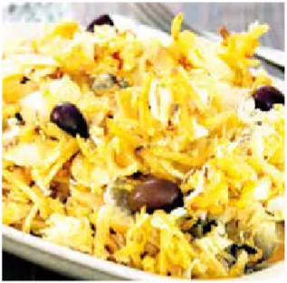

Chapter 5 · Matching food with wine
Bacalhau à Brás

Aromatic compound of fine slices of dried cod with sliced potato and eggs, with the flavour enhanced by garlic and olives.
Wine: A white velvety, fruity wine, but not too fruity, medium-bodied but well-structured, from Tejo or Lisbon (Chardonnay) or Dão (Encruzado, Bical) or even from Vinho Verde (Avesso, Loureiro), a rosé-wine like Negra Mole variety of Algarve or a sparkling white suit very well.
Explanation: The salt effect of the dried fish reinforces the taste intensity of the ingredients of the dish. This combination of flavours requires a wine that can balance the richness of the dish, giving it a refreshing touch. Meanwhile the potatoes and the egg detract from the cod’s typical flavour and complicate the choice of wine corresponding to the dominant characteristics of the food.